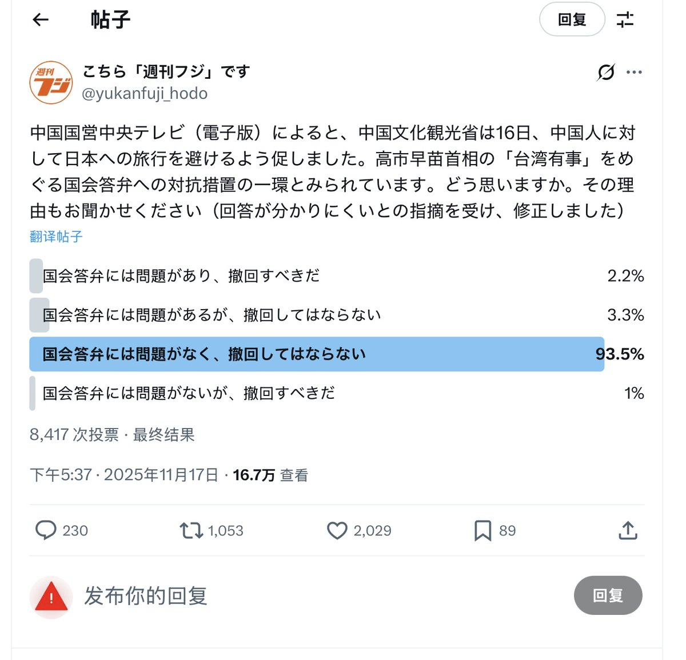
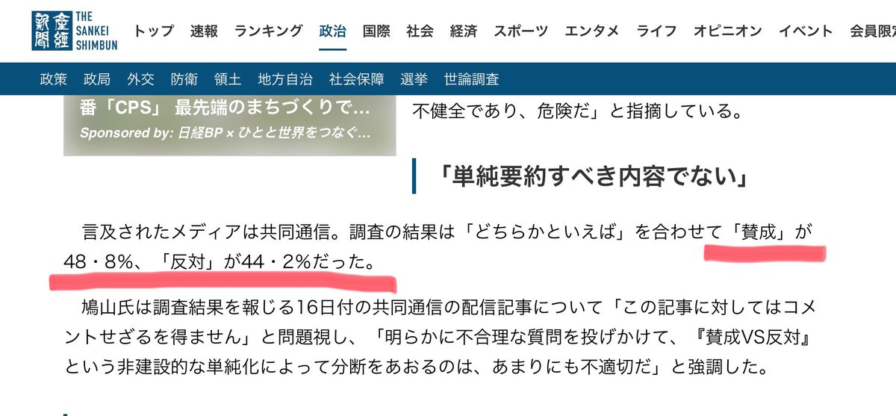
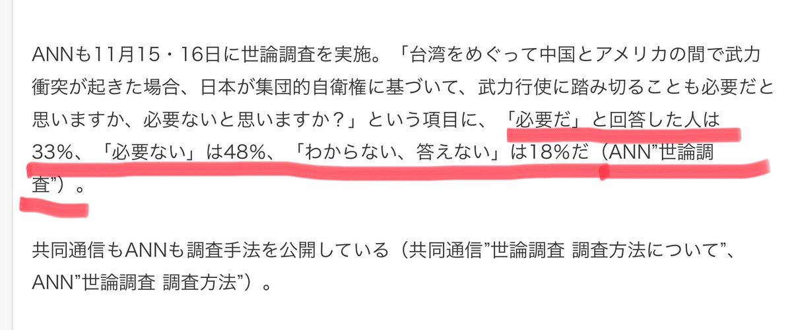

Aoi M
@aoim33
RT @pei_li29290: 原来推特并不具有日本民意代表性，对是否支持日本直接表明对台立场的日本民间调查：
推特投票：支持93.5%，反对6.5%
产经新闻街头问卷：支持48.8%，反对44.2%
ANN街头问卷：支持33%，反对48%，不表态18%
结论：推特是日本极…



支黑爆破军团战报
@pei_li29290
原来推特并不具有日本民意代表性，对是否支持日本直接表明对台立场的日本民间调查：
推特投票：支持93.5%，反对6.5%
产经新闻街头问卷：支持48.8%，反对44.2%
ANN街头问卷：支持33%，反对48%，不表态18%
结论：推特是日本极右网民聚集地，和现实中的日本人不是一批人，不能代表民意 https://t.co/ZgEjQlqpdv https://t.co/FQcuTgtJoe